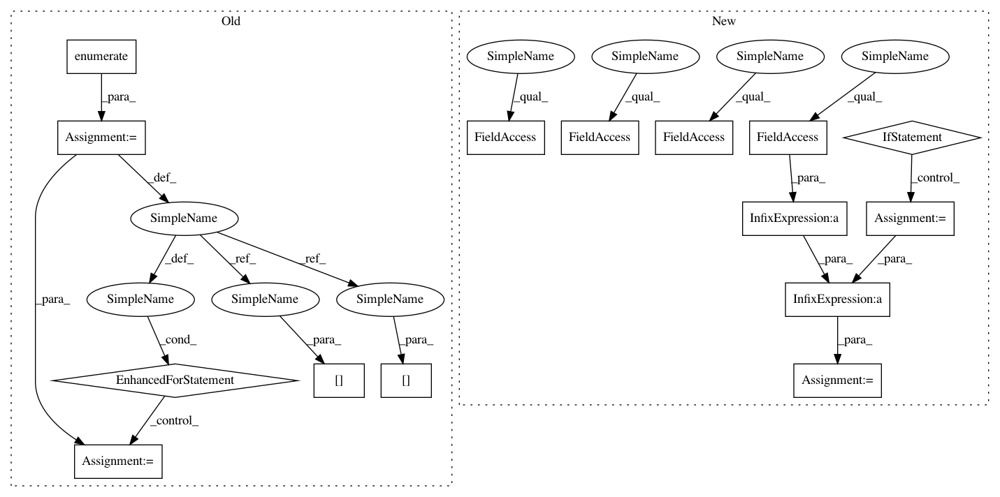

ba256835a4f33d9139a70b6440c3223123132bc8,torchnet/meter/confusionmeter.py,ConfusionMeter,add,#ConfusionMeter#,42
Before Change
"multi-label setting is not supported"
pred = output.argmax(1)
for i,n in enumerate(pred):
pos = onehot and target[i].argmax(0) or int(target[i])
self.conf[pos][n] += 1
def value(self):
if self.normalized:
conf = self.conf.astype(np.float32)
return conf / conf.sum(1).clip(min=1e-12)[:,None]
After Change
assert predicted.shape[0] == target.shape[0], \
"number of targets and predicted outputs do not match"
if np.ndim(predicted) != 1:
assert predicted.shape[1] == self.k, \
"number of predictions does not match size of confusion matrix"
predicted = np.argmax(predicted, 1)
else:
assert (predicted.max() < self.k) and (predicted.min() >= 0), \
"predicted values are not between 1 and k"
onehot_target = np.ndim(target) != 1
if onehot_target:
assert target.shape[1] == self.k, \
"Onehot target does not match size of confusion matrix"
assert (target >= 0).all() and (target <= 1).all(), \
"in one-hot encoding, target values should be 0 or 1"
assert (target.sum(1) == 1).all(), \
"multi-label setting is not supported"
target = np.argmax(target, 1)
else:
assert (predicted.max() < self.k) and (predicted.min() >= 0), \
"predicted values are not between 1 and k"
// hack for bincounting 2 arrays together
x = predicted + self.k * target
bincount_2d = np.bincount(x.astype(np.int32),
minlength=self.k ** 2)
assert bincount_2d.size == self.k ** 2
conf = bincount_2d.reshape((self.k, self.k))
self.conf += conf
def value(self):
In pattern: SUPERPATTERN
Frequency: 3
Non-data size: 15
Instances
Project Name: pytorch/tnt
Commit Name: ba256835a4f33d9139a70b6440c3223123132bc8
Time: 2017-08-24
Author: swetha.tanamala@gmail.com
File Name: torchnet/meter/confusionmeter.py
Class Name: ConfusionMeter
Method Name: add
Project Name: suavecode/SUAVE
Commit Name: a482f9a6ce01bccb75413cd1ff212ccf047dd614
Time: 2020-01-31
Author: mclarke2@stanford.edu
File Name: trunk/SUAVE/Components/Energy/Networks/Propulsor_Surrogate.py
Class Name: Propulsor_Surrogate
Method Name: evaluate_thrust
Project Name: pytorch/tnt
Commit Name: ba256835a4f33d9139a70b6440c3223123132bc8
Time: 2017-08-24
Author: swetha.tanamala@gmail.com
File Name: torchnet/meter/confusionmeter.py
Class Name: ConfusionMeter
Method Name: add
Project Name: suavecode/SUAVE
Commit Name: 13b86a857c1e9fb716c75c51646eaec5829b945d
Time: 2020-01-19
Author: timdmacdo@gmail.com
File Name: trunk/SUAVE/Components/Energy/Networks/Propulsor_Surrogate.py
Class Name: Propulsor_Surrogate
Method Name: evaluate_thrust